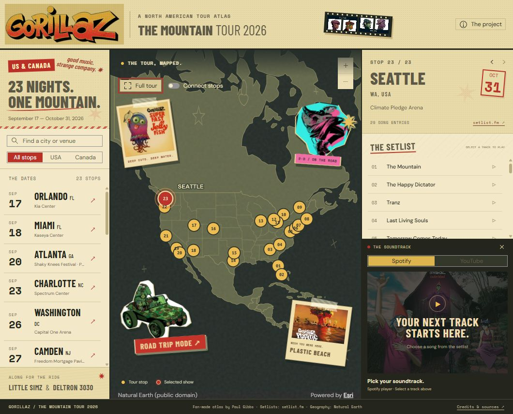

01Complete
NOVEMBER 01 · Points
Gorillaz — The Mountain Tour Atlas
Follow Gorillaz across 23 US and Canada venues, explore each concert’s setlist, and play the songs through Spotify or YouTube.
✦ NOVEMBER 01—30, 2026 / #30DAYMAPCHALLENGE
Thirty daily themes. Thirty chances to look at the world a little differently. A collection of maps, small experiments, and the notes behind them.

FIRST STOP / DAY 01POINTS · INTERACTIVE MAP
Gorillaz across the US & Canada.
THE NOVEMBER COLLECTION
Each entry includes its page, source code,
and the story behind the map.
NOVEMBER 01 · Points
Follow Gorillaz across 23 US and Canada venues, explore each concert’s setlist, and play the songs through Spotify or YouTube.
NOVEMBER 02 · Lines
Explore Seattle’s steep street segments in 3D, rank recorded grades, and inspect interactive terrain elevation profiles.
NOVEMBER 03 · Polygons
Follow 2026 US House, Senate and governor races with congressional district and state polygons, candidate returns, filters and source timestamps.
NOVEMBER 04 · Clusters
Explore Inland Empire warehouse concentrations alongside surrounding buildings, with neon clusters, footprint views, and sourced neighborhood context.
NOVEMBER 05 · Senses: Sight
Trace views from the Space Needle to Seattle landmarks in 3D, test your own points, and explore how terrain and buildings shape what you can see.
NOVEMBER 06 · Vintage
Travel from Sapporo to Okinawa in eight guided levels, exploring real Japanese terrain through a 16-bit sci-fi console with pixel landscapes and neon beacons.
NOVEMBER 07 · 10 minute map
Explore a week of USGS-reported earthquakes around the Pacific and beyond, with magnitude-sized circles and clickable event details. Built in a ten-minute working window.
NOVEMBER 08 · Utopia
Explore an imagined terrain atlas through seven synchronized album excerpts, with 19 track locations and a personal choice of utopia.
NOVEMBER 09 · Urban-rural
Compare Seattle and the valley on two maps at the same scale, exploring population density, growth boundaries, and designated working land.
NOVEMBER 10 · Prompting only
Pilot a simulated drone above Portland’s Willamette waterfront and watch its live first-person view alongside the 3D city scene.
NOVEMBER 11 · Senses: Sound
Explore four hydrophone sites around Puget Sound and hear narrated examples of orca calls, a ferry, and a harbor seal.
NOVEMBER 12 · Power
Compare the leading electricity sources by country from 2000 to 2025 and trace the years when the lead changed.
NOVEMBER 13 · Interactions
Show how places and systems affect one another, or invite the viewer to interact with the map.
Map concept to be selected.
NOVEMBER 14 · Borgesian map
Explore the boundary between a place and its representation, inspired by the idea of a map at impossible detail.
Map concept to be selected.
NOVEMBER 15 · Inside out
Reverse a familiar perspective, reveal an interior, or turn a conventional map’s logic inside out.
Map concept to be selected.
NOVEMBER 16 · Collaborative map
Make a map with another person and document how the shared decisions shaped the result.
Map concept to be selected.
NOVEMBER 17 · Light & dark
Use illumination, shadows, or contrasting tones to reveal a geographic story.
Map concept to be selected.
NOVEMBER 18 · NULL
Interpret absence, missing values, or an intentionally open theme through a map.
Map concept to be selected.
NOVEMBER 19 · Senses: Smell
Consider how scents, their sources, and the experience of smell can be represented geographically.
Map concept to be selected.
NOVEMBER 20 · Hexagons
Use hexagonal shapes or grids to organize locations, compare values, or explore a spatial pattern.
Map concept to be selected.
NOVEMBER 21 · OpenStreetMap
Build from OpenStreetMap data or contribute to the shared geographic record through mapping.
Map concept to be selected.
NOVEMBER 22 · Projections
Explore how representing a globe on a flat surface changes shape, distance, direction, or perspective.
Map concept to be selected.
NOVEMBER 23 · Senses: Taste
Explore food, drink, ingredients, or the places and experiences connected with taste.
Map concept to be selected.
NOVEMBER 24 · Network
Map the connections that link places, people, routes, or other parts of a system.
Map concept to be selected.
NOVEMBER 25 · Is this a map?
Test the edges of cartography with an experiment that blends geographic thinking, art, and visualization.
Map concept to be selected.
NOVEMBER 26 · Water
Explore water’s places, movement, boundaries, or role in shaping the landscape.
Map concept to be selected.
NOVEMBER 27 · New tool
Try an unfamiliar tool in the mapmaking process and document what the experiment teaches.
Map concept to be selected.
NOVEMBER 28 · Senses: Feeling
Translate an emotion, atmosphere, or felt experience of place into a geographic expression.
Map concept to be selected.
NOVEMBER 29 · Raster
Build a geographic story with pixels, imagery, or another continuous gridded surface.
Map concept to be selected.
NOVEMBER 30 · Pen & paper
Make an analog map by hand, then photograph or scan the finished work for the collection.
Map concept to be selected.
No maps match that search. Try another theme or clear the filter.
Completed entries open maps; planned entries open placeholder pages. Choose Source for the code and Notes for the process and credits.
ABOUT THIS COLLECTION
This is Paul Gibbs’s contribution to #30DayMapChallenge 2026. The daily themes set the starting point; the medium, tools, data, and visual direction can change from one day to the next.
Open a day’s project notes for sources, credits, methods, limitations, and reflections. Source links lead to that day’s folder in the shared GitHub repository.